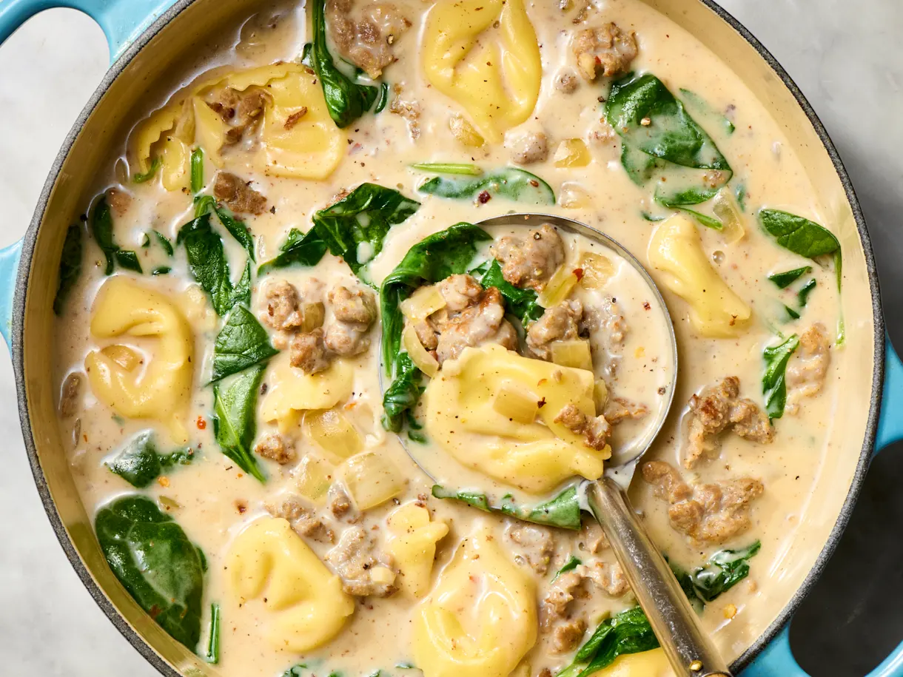

Sausage Tortellini Soup

This sausage tortellini soup has it all - meaty chunks of sausage, pillowy cheese tortellini, a whole package of leafy greens, and a rich, super-creamy broth packed with flavor.
1 lbraw mild Italian sausage, casings removed1medium yellow onion, diced (about 1 1/2 cups)3cloves garlic, minced2 tspkosher salt¼ tspfreshly ground black pepper¼ tspred pepper flakes (optional)¼ tspdried oregano (optional)2 tbspall-purpose flour32 ozlow-sodium chicken broth (about 4 cups)8-9 ozcheese tortellini (about 2 1/2 cups)5 ozbaby spinach (about 5 packed cups)1 cuphalf-and-half
Cook 1 pound raw Italian sausage in a Dutch oven or large pot over medium heat, breaking it up into small pieces with a wooden spoon, then add the diced onion and cook until soft and the meat is no longer pink, 6 to 8 minutes.
Stir in the minced garlic, the kosher salt, black pepper, red pepper flakes and oregano if using. Cook, stirring occasionally, until the flavors combine, about 1 minute. Sprinkle the flour over the sausage mixture. Cook, stirring constantly, for 1 minute to cook the floury taste out.
Stir in 1 (32-ounce) carton low-sodium chicken broth, scraping the bottom of the pot with a wooden spoon to release any stuck-on bits. Increase the heat to medium-high and bring to a lively simmer.
Reduce the heat to maintain a gentle simmer. Cook for 5 minutes to let the flavors meld.
Stir in cheese tortellini and baby spinach. Cook for 1 minute less than the package instructions for the tortellini. Stir in 1 cup half-and-half. Taste and season with more kosher salt and black pepper as needed.
Enjoy!